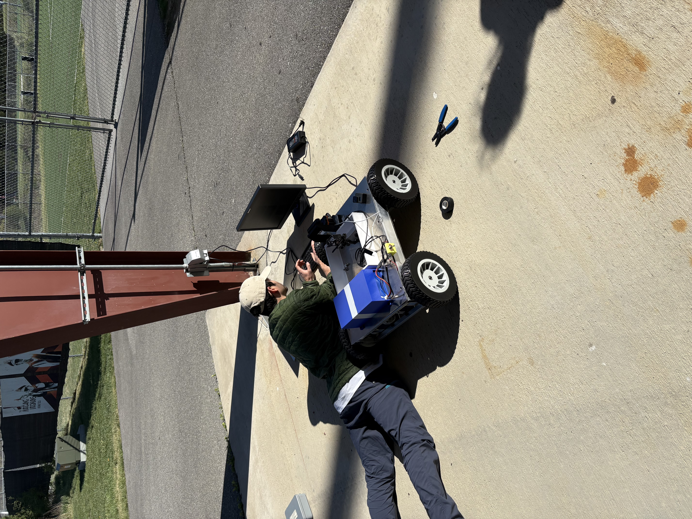
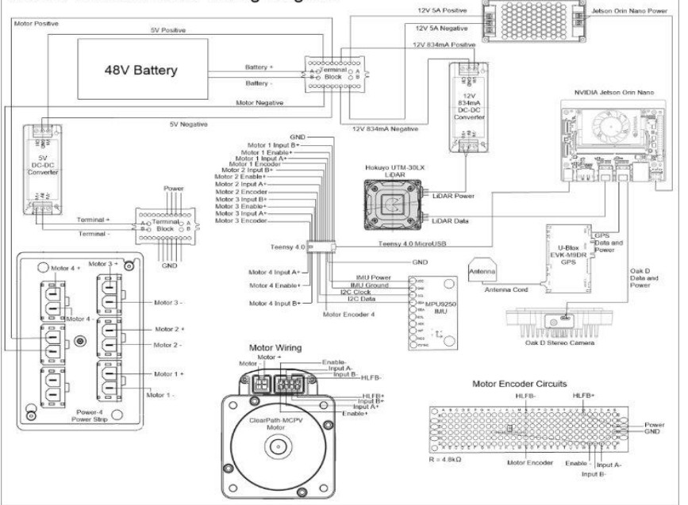

My 2025 senior design capstone. The goal was to design and build a fully autonomous off-road ground vehicle in ROS2, capable of navigating unmapped, dynamic outdoor environments without prior maps.
I led the electrical and software side of the project, working in C, C++, ROS2, and Linux. This was where I fell in love with robotic systems and low-latency middleware like ROS.

The rover operated in unmapped, constantly changing outdoor environments, SLAM wasn't the right fit. Instead we used a GPS-anchored localization approach: GPS for global pose, IMU for heading, and Lidar plus the ZED2 depth camera for local obstacle perception. Nav2 ran on top of that fusion, letting the rover navigate environments it had never seen before in real time.
Nav2 was configured to consume GPS as the global localization source instead of the typical static map. The hard part was tuning the local planner to handle off-road obstacles that appeared and moved unpredictably while still respecting GPS-derived global goals.
GPS, IMU, Lidar (Hokuyo), and the ZED2 depth camera each contributed a different piece of the picture, GPS for global position, IMU for heading, Lidar for precise 2D obstacle geometry, and the ZED2 for 3D depth in off-road terrain. The trickiest part was reconciling them when they disagreed, especially GPS dropouts and IMU drift.
Low-level control ran on a Teensy 4.1 with micro-ROS, bridging to a Jetson Nano running the ROS2 navigation stack. A custom motor control board drove the ClearPath motors directly. The entire system ran off a single battery with multiple buck converters stepping voltage down for each subsystem.
← Back to Home